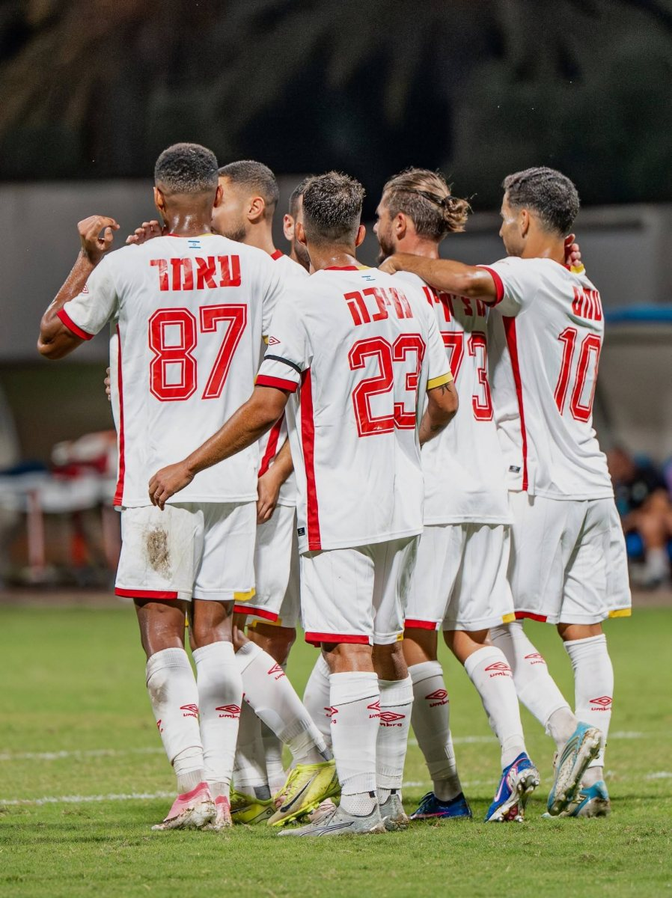

גם אחרי התיקו: מ.ס אשדוד נותרה בראש הלאומית
עם השלמת המחזור העשירי ב־19.10, אשדוד ראשונה עם 25 נקודות, אחת מעל בני יהודה וארבע מעל ראשון לציון. כתבת ה־0:0 מול קריית גת עודכנה בתמונת הצמרת.

המשחק בקצרה
עם השלמת המחזור העשירי בליגה הלאומית ב־19 באוקטובר, מ.ס אשדוד נותרה במקום הראשון למרות התיקו מול קריית גת. הטבלה הרשמית מציגה לאשדוד 25 נקודות, לבני יהודה 24 ולהפועל ראשון לציון 21 — יתרון של נקודה וארבע נקודות בהתאמה, בחישוב לפי הטבלה. לכל אחת משלוש הקבוצות עשרה משחקים.
לא ניצחון תשיעי ברציפות, אבל גם לא הפסד: מ.ס אשדוד סיימה ביום שישי, 16 באוקטובר, בתיקו 0:0 בבית מול מכבי קריית גת במחזור העשירי בליגה הלאומית. זהו התיקו הראשון שלה בליגה העונה, לאחר שמונה ניצחונות רצופים, לפי דיווחי הסיום של ONE ושל וואלה ספורט.
ראזי אבו חמדאן עמד במרכז אחד האירועים המשמעותיים במשחק: לפי דיווחי ONE ווואלה, קריית גת קיבלה פנדל ודניס קוזלובסקי בעט, אך שוער אשדוד הדף. זו הייתה הזדמנות של האורחת לשנות את התוצאה, שנשארה מאופסת עד השריקה האחרונה.
מבחינת המאזן המצטבר, נקודת התיקו מצטרפת ל־24 הנקודות שהיו לאשדוד לפני המחזור: 25 נקודות בעשרה משחקים. גם סך שערי הזכות נשאר 22. בחישוב שלנו, ממוצע הכיבושים עומד כעת על 2.20 למשחק, לעומת כ־2.44 בתום תשעה מחזורים — שינוי שנובע ממשחק נוסף ללא שער זכות.
ההבחנה החשובה היא בין שני רצפים שונים. רצף שמונת הניצחונות הסתיים, אך מאז ההפסד במחזור הפתיחה אשדוד לא הפסידה בתשעה משחקי ליגה רצופים: שמונה ניצחונות ותיקו. זהו סיכום התוצאות עד היום, לא תחזית להמשך העונה.